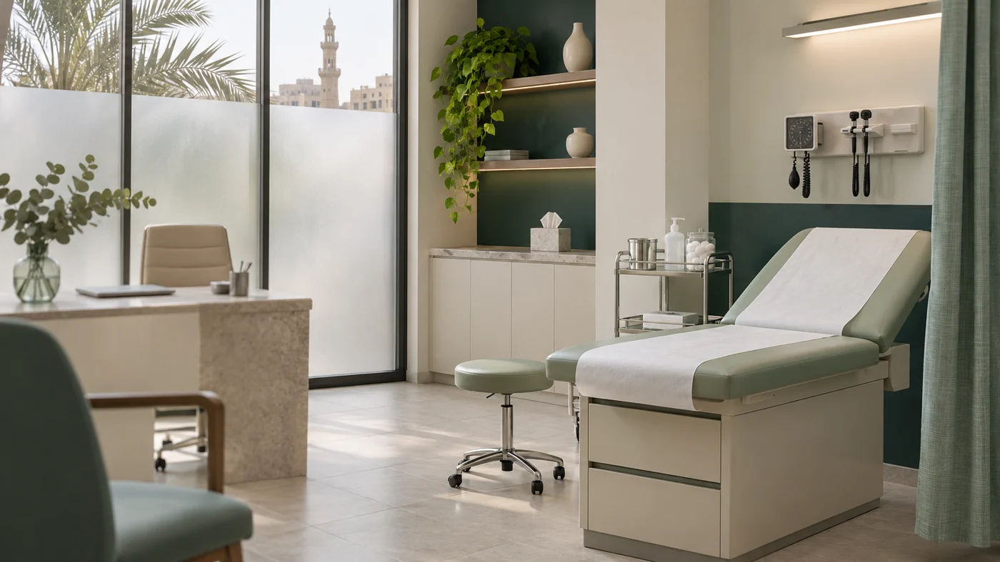

نسخة عرض تفاعلية
مواعيدك وزياراتك
مواعيدك وزياراتك
في مكان واحد.
احجز موعدك، تابع الزيارات اللي فاتت، وراجع بياناتك من بوابة واحدة.
جرّب حساب المريض دخول بضغطة واحدة بحساب تجريبي جاهز.
عيادة الديمو
الحجز ومتابعة الزيارات
الحجز ومتابعة الزيارات
خدمات بوابة المريض
تقدر تجرّب كل خدمة من نفس الحساب حساب مريض تجريبي
أهلًا يا سلمى
هنا مواعيدك وزياراتك وبيانات ملفك.
موعدك القادماحجز موعد

حجز موعد
سجل الزيارات
زيارتان سابقتان في الملف التجريبي
بياناتي
سلمى حسن
حساب مريض تجريبي
- رقم الملف
- DEMO-014
- العمر
- ٢٩ سنة
- وسيلة التواصل
- غير مفعّلة في الديمو
- تنبيهات الملف
- لا توجد تنبيهات مسجّلة